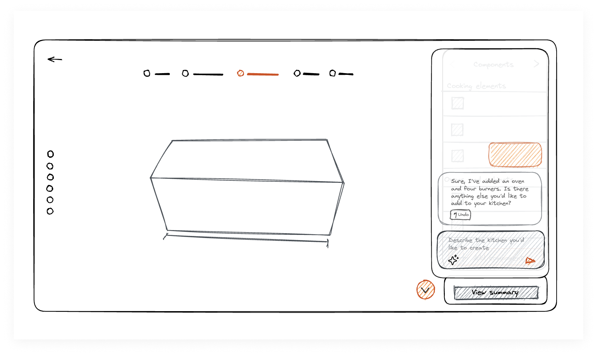
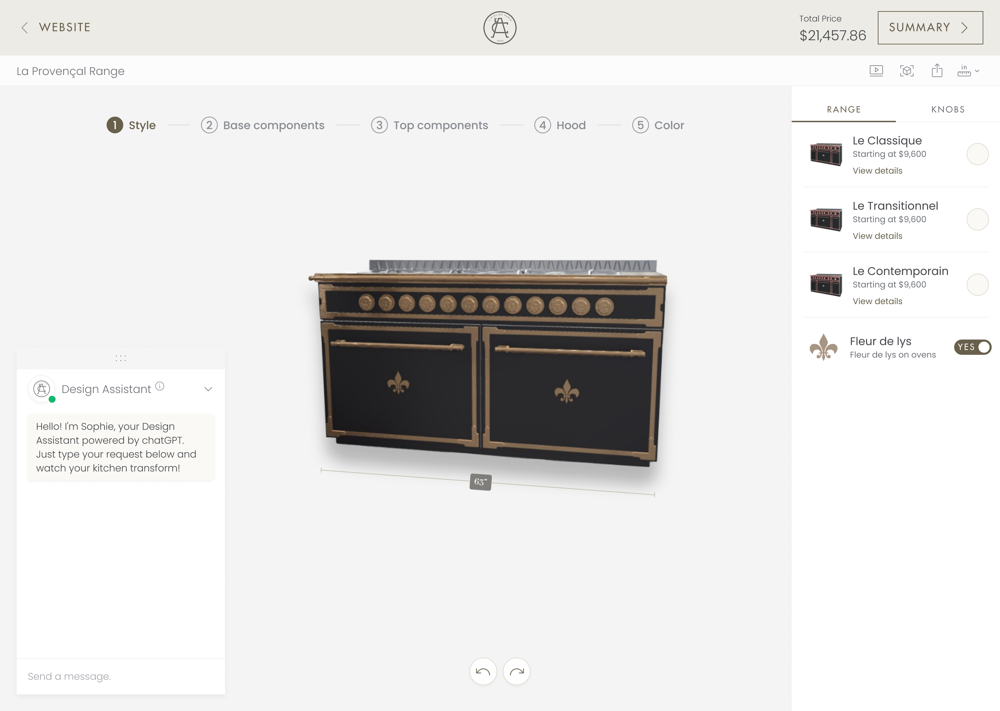

AI in 3D Product Configurators: Improving Product Customisation Experience
Role: Product Designer, UX Researcher
Timeline: April 2023 - July 2023

Overview
The goal of this initiative was to explore ways in which Large Language Model integrations could improve the experience of our 3D product configurators.
This case study covers the technical validation phase and early insights. We integrated GPT4 using the OpenAI API. Our first learning sessions helped us get a better understanding for the potential of the feature and main challenges, as we searched for ways in which AI could add value to users.
Technical Validation
This cool new technology is promising to revolutionise the way we work and interact with the world. Since OpenAI announced their API, everyone's been trying to figure out how to integrate AI in their products.
There are a lot of unknowns when using new technologies and finding novel applications. Even from a technical perspective, we had to find out if it was possible to configure a product using only natural language.
For this first phase, we implemented a chat, that opened independently from the existing interface. We wanted to test mainly functionality. The goal was to validate if all aspects of configuration could be changed using only the chat.
Learnings from Research
The first step was to validate if this was an idea worth pursuing at all. We wanted to put it in front of people as soon as possible to get an idea of real world applications for this feature. For the first iteration, we integrated a chatbot to an existing kitchen configurator. Users could ask questions or instruct it to make changes such as adding or removing components, changing the size of elements or applying another colour.
We found out that, although this conversational approach had a lot of potential, especially when users struggled to accomplish some task, the chatbot framing wasn't ideal as people had strong notions of this concept based on previous bad experiences. Essentially, users were impressed by the functionality once we asked them to try the feature but didn't have the motivation to try it themselves. The first big insight was that how we were framing the feature wasn't perceived as desirable.
- Users associate the chatbot with bad experiences and limited capabilities
- The functionality delivers more value when users are stuck or need help to complete an action
- The feature is not perceived as desirable
- Users still want control and seeing the available options helps them model what is possible
- Users expect more guidance from an assistant
Rethinking our approach
Now that we knew we could deliver technically, we needed to find a way to add value with this feature. We made a plan to align the team but realised that business objectives and vision for the product weren’t clear. We are currently in the process of defining this vision so we can better understand how to frame this feature in the context of the whole product.
Conclusion
Starting with a solution is often dangerous because you run the risk of building something that doesn't solve a real problem or user need. It is exciting to use new technologies and often necessary to create a proof of concept for technical validation. It was important for our team to see users be impressed by the capabilities of the feature and still say – it's cool but I don't really need it. Now we can focus on uncovering what they actually need so we can find useful applications.